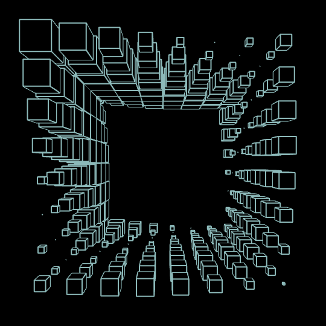

Powerful animation with simple code, GreenSock Animation Platform

GSAP Can be simple
GSAP doesn't have to be complex... as some of the best animations be be created with only a few lines of code!
GSAP's Tween feature allows developers to make simple interactions like changing the position of an element or changing its rotation!
This functionality can then be extended to be paused, played, reversed, or even restarted from the beginning! Plus, GSAP works with almost anything, not just HTML elements! It is completely possible to take this interaction and apply it to other things like videos.